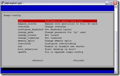 Пошаговое руководство по запуску миникомпьютера Raspberry Pi.
Прошла неделя с момента получения мною миникомпьютера Raspberry Pi. За это время я реализовал практически все свои задумки и сейчас готов поделиться опытом. В этой статье я расскажу о том, как запустить и настроить Raspberry Pi.
Для запуска нам понадобятся:
- Raspberry Pi
- USB клавиатура
- USB мышка (если собираетесь работать в визуальной оболочке)
-
SD/MMC/SDIO карта памяти размером от 2 до 32 Гб (по возможности покупайте карты 6 или 10 класса)
- Micro USB адаптер для питания Raspberry Pi
- Монитор с HDMI входом, или телевизор, или TV тюнер с RCA разъемами
-
HDMI кабель для подключения к монитору или RCA кабель для подключения к телевизору или TV тюнеру
- Программа Win32DiskImager для записи образа системы на флешку
- Образ операционной системы Raspbian “wheezy”
- Кардридер для чтения SD/MMC/SDIO карт памяти
Если все необходимое у вас есть под рукой, то продолжим.
Запись образа Raspbian на карту памяти для Raspberry Pi
Для записи образа системы Raspbian на карту памяти вам понадобится программа Win32DiskImager и сам образ Raspbian “wheezy”. Скачайте их на свой компьютер.
- Вставьте флеш карту в кардридер
- Запустите программу Win32DiskImager
- Укажите в поле Image File путь в скаченному образу Raspbian “wheezy”
- Выберите в меню Device букву диска с вашей флешкой
-
Нажмите кнопку Write и дождитесь окончания записи образа Raspbian на вашу флеш карту
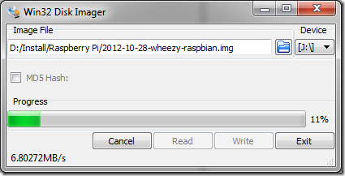
- Закройте программу Win32DiskImager
- Корректно отключите вашу флешку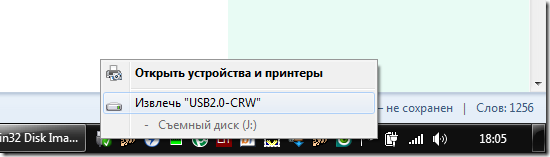
- Извлеките карту памяти из кардридера
Теперь у вас есть готовая к работе флешка с записанным образом Raspbian.
Подключение Raspberry Pi
- Подключите карту памяти к Raspberry Pi
- Подключите USB клавиатуру (и USB мышь если надо)
-
Подключите HDMI кабель одним концом к монитору, а вторым и Raspberry Pi или RCA кабель к телевизору (TV тюнеру) и Raspberry Pi (в RCA будет использован только желтый разъем)
- Включите ваш монитор или телевизор (TV тюнер)
- Подключите Mini USB адаптер питания к Raspberry Pi
- Включите Mini USB адаптер питания в розетку
При использовании TV тюнера в качестве монитора, необходимо источником сигнала выбрать композитный вход.
Настройка Raspberry Pi
При первой загрузке Raspberry Pi вы увидите меню Raspi-config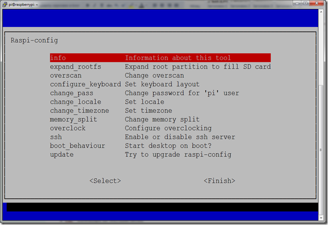
Если этого не произошло, то наберите в консоли команду sudo raspi-config
Через это меню мы сможем произвести основные настройки нашей будущей системы.
Рассмотрим пункты меню, которыми мы будем пользоваться:
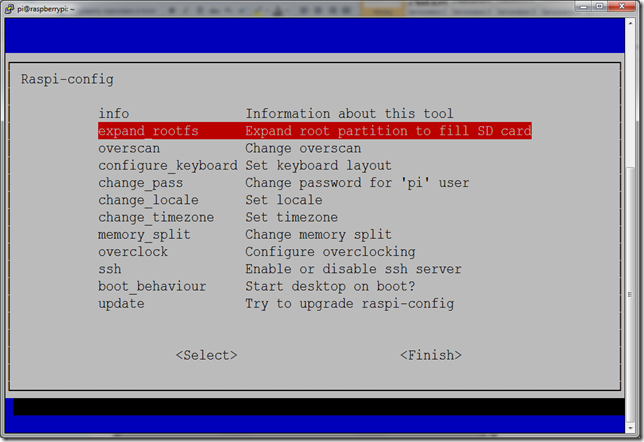expand_rootfs - здесь вы можете увеличить root размер на весь размер карты памяти. Очень рекомендую это сделать в первую очередь.
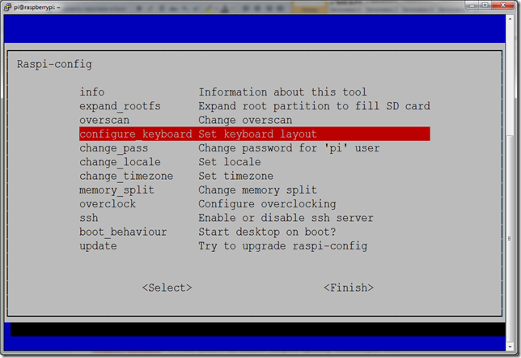configure_keyboard - в этом пункте вы можете выбрать драйвер клавиатуры, если вариант по умолчанию вас не устраивает.
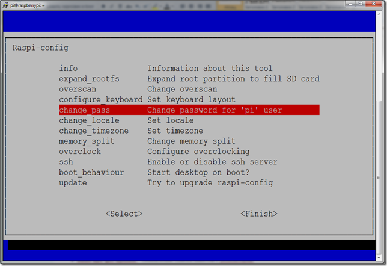change_pass - смена пароля пользователя "pi". При вводе пароль не отображается. Ввести необходимо дважды.
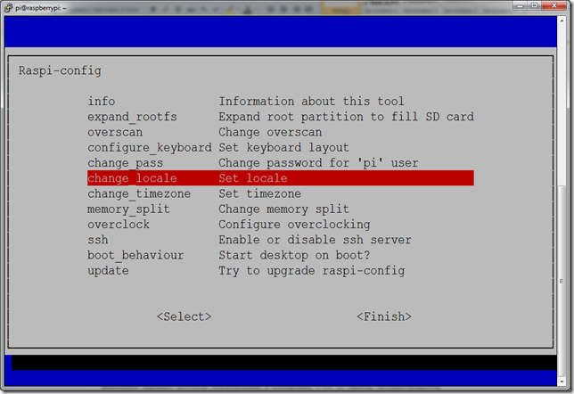change_locate - установка языка системы.
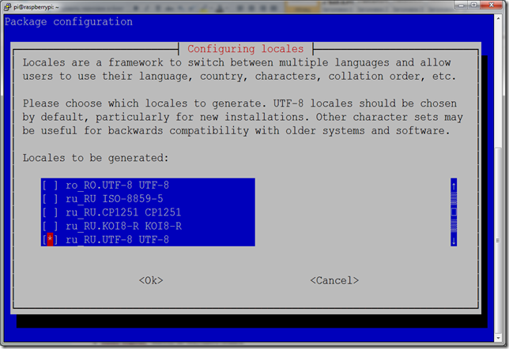Выберите вариант русской локализации в кодировке UTF-8. Выбор осуществляется пробелом.
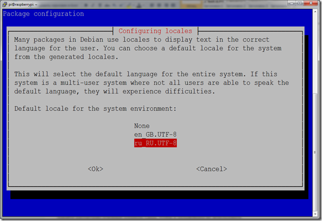Затем выверите его в списке доступных локализаций.
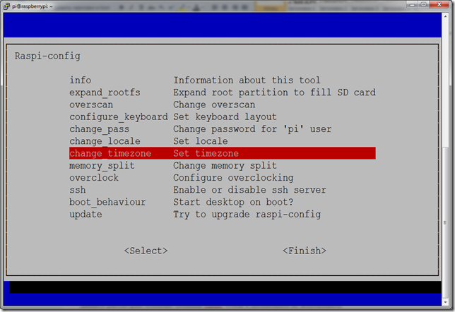change_timezone - выбор часового пояса. В Raspberry Pi нет своих часов, поэтому время берется из Интернета. Для удобства выберите свой регион.
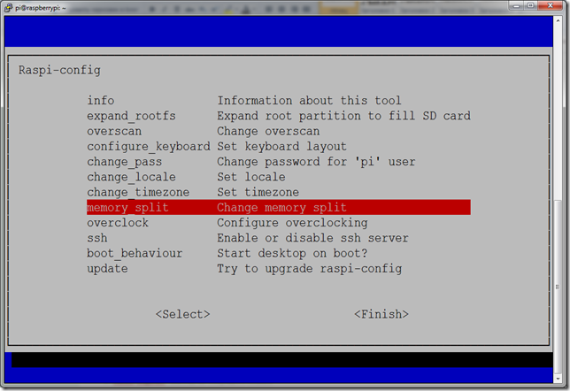memory_split - распределение памяти Raspberry Pi
Вам необходимо определиться, сколько оперативной памяти вы готовы выделить для графического процессора. При работе в консоли будет достаточно и 16 Мб, а вот для просмотра видео в графической оболочке придется пожертвовать 64-128 Мб. Выбранные значения могут быть только: 16, 32, 64, 128 или 256.
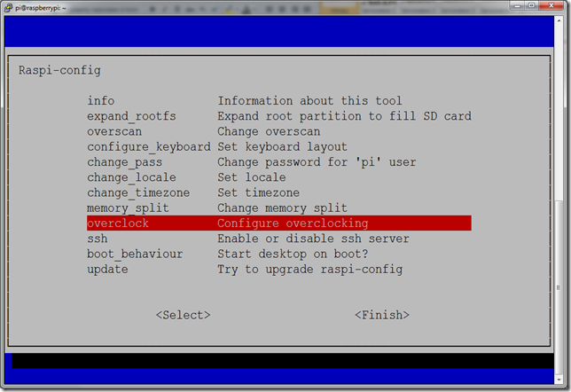overclock - разгон процессора Raspberry Pi
Пока можете оставить значение по умолчанию, а потом, в случае необходимости выберите подходящий для вас вариант. Здесь следует учесть тот факт, что при увеличении частоты, также увеличивается и потребление энергии. То есть ваш источник питания должен выдавать достаточный ток для нормальной работы.
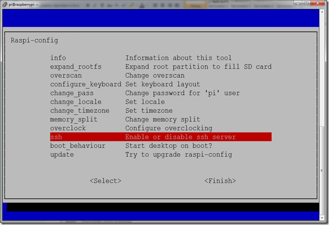ssh - включение или выключение SSH сервера. Рекомендую вам включить SSH, если вы собираетесь использовать удаленное управление.
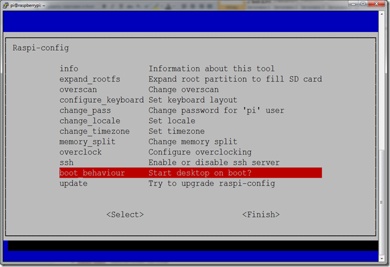boot_behaviour - загрузка визуальной оболочки при загрузке системы. Если вы собираетесь больше времени проводить в консоли, то не включайте эту функцию. Для загрузки визуальной оболочки используйте команду startx.
После завершения настроек нажмите на клавиатуре Ctrl+F, выберите <Finish>. Raspberry Pi уйдет на перезагрузку для внесения изменений.
Установка пароля пользователю "root" в Raspberry Pi
Наберите в консоли команду sudo passwd root и введите пароль дважды.
Полезные консольные программы для Raspberry Pi
Top – диспетчер задач
Встроен в систему
Запуск: top
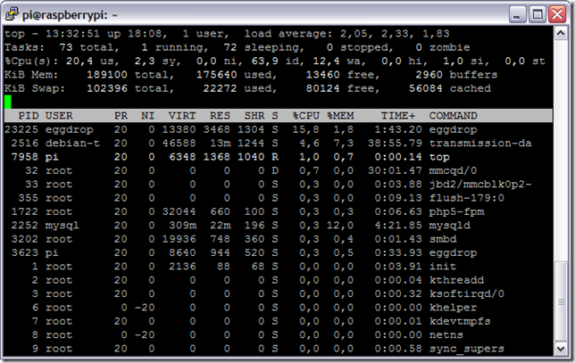
Htop – диспетчер задач
Установка: sudo apt-get install htop
Запуск: htop
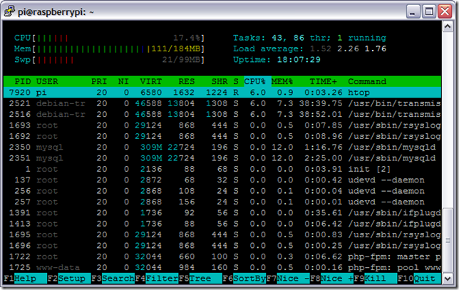
Мой любимый диспетчер задач :)
Mc – файловый менеджер
Установка: sudo apt-get install mc
Запуск: mc
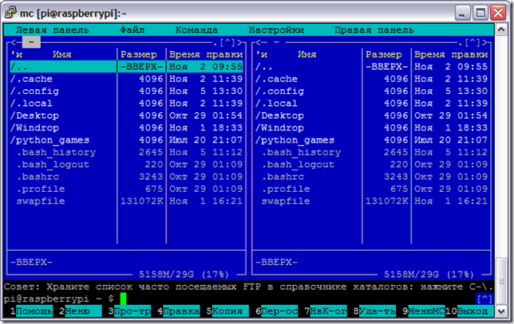
Weechat – IRC клиент
Установка: sudo apt-get install weechat
Запуск: weechat-curses
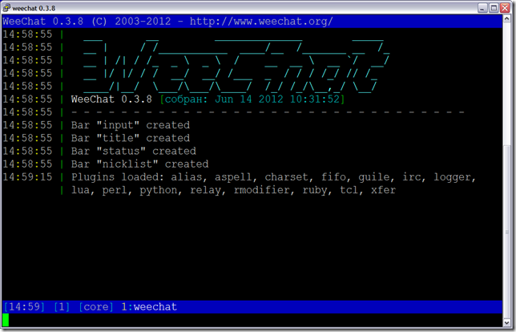
Links – текстовый браузер
Установка: sudo apt-get install links
Запуск: links
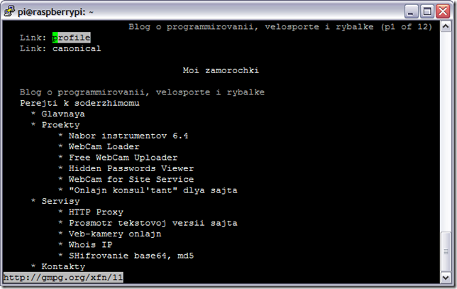
Клавиша Esc откроет меню браузера
Команды Linux
На случай, если эту статью будут читать пользователи, которые ранее не работали с Linux, я решил описать несколько команд, которые вам пригодятся в работе.
- sudo - ставится перед командой и выполняет ее с правами пользователя root
- sudo reboot - перезагрузка
- sudo halt - выключение
- Ctrl+C - выход из открытой консольной программы (если не предусмотрено других клавиш)
- Shift+Ins - вставить текст в консоль
- Ctrl+Ins - копировать выделенный текст из консоли
- cd - переход в нужную папку. Например cd /home/pi
- dir - покажет содержимое текущей папки
- pwd - покажет ваше текущее расположении
- date - покажет время и дату
- cal - покажет календарь на текущий месяц
- cal -y - покажет календарь на текущий год
-
wget - скачать файл в текущую директорию. Например wget http://mysite.com/myfile.deb
- sudo apt-get update - обновит список пакетов с репозитария
- sudo apt-get upgrade - обновит установленные пакеты
- sudo apt-get install [имя пакета] - установит нужный пакет. Например sudo apt-get install mc
- стрелки вверх и вниз - листают набранные ранее команды
Резервное копирование Raspberry Pi
Теперь у нас есть минимально настроенная рабочая система с небольшим набором программ. Чтобы в случае всяких непредвиденных обстоятельств нам не пришлось все вышеописанное повторять заново, мы сделаем backup наших данных.
Все вопросы и дополнения оставляйте в комментариях. Буду признателен, если поделитесь ссылкой на эту статью с друзьями в социальных сетях.
P.S. В следующей статье я опишу процесс организации удаленного доступа к Raspberry Pi. Будет рассмотрено SSH подключение для доступа к консоли и организация удаленного доступа к файлам по SSH. Также мы настроим локальную сеть.


 Raspberry Pi – подключение USB HDD
Raspberry Pi – подключение USB HDD {kind=link}
{kind=link}
{kind=link}
{kind=link}
{kind=link}
{kind=link}
{kind=link}
{kind=link}
{kind=link}
{kind=link}
{kind=link}
{kind=link}
{kind=link}
{kind=link}
{kind=link}
{kind=link}
Хочу поблагодарить за статью. Сразу много вопросов закрылось. Продолжайте писать про Raspberry Pi пожалуйста.
Добрый день!
Не подскажите как организовать работу Raspberry Pi так, что бы при включении устройства, на подключенном мониторе автоматически запускался видео фильм (avi, mpeg-4), без манипуляций с клавиатурой и мышью.
Спасибо!
Сходу так не скажу. Видеопроигрыватель надо поискать, который позволяет запускаться с указанием пути к выбранному файлу и добавить эту команду запуска в автозагрузку.
Ну и поискать, как сделать так, чтобы при загрузке авторизация проходила без запроса логина и пароля.
VLC , а автозагрузку можно найти в /etc/xdg/lxsession/LXDE файл autostart
Это при условии что у Вас стоит Raspbian
Не знаете под сенсорный экран Raspberry Pi настраивали? Может ссылку подскажите?
Спасибо!
такое встречал только в сборке Android для Raspberry Pi
Если заинтересует - могу поделиться рабочим образом, но он работает только на HDMI мониторах.
Здравствуйте, мне также хотелось-бы посмотреть сборку Андрюши для Малинки.
Было бы отлично!
Если есть инструкция по подключению монитора, был бы безмерно благодарен.
Здравствуйте? Не подскажете, можно ли поставить эту версию Raspbian “wheezy” на виртуальную машину VMware? Пока едет платка, хочется на виртуалке потестировать, но почему-то не получается установить.
даже не знаю, я не пробовал
Здравствуйте. У меня возникли вопросы:
1. Где купить это чудо? Где вы сами купили. Российский поставщик гнет цену.
2. Как подключить интернет? Кабель туда нельзя впихнуть? Или только вай-фай адаптор? Специальный подойдет http://www.electronshik.ru/item/wipi-dongle-wi-fi-usb-for-raspberry-pi-1125827?
3. Какую именно взять флешку? Опять же есть специальная http://www.electronshik.ru/item/raspberry-pi--prog-4gb-sdcard-1069118 - или это замануха?
4. Флешка выполняет роль постоянного запоминающего устройства? Типа hhd
5. Питание подойдет http://www.electronshik.ru/item/adapter-tinychargermicrousb-bl1-1185035?
1 ebay.com
2 в модели "B" есть сетевой разъём
3 любую, но лучше 6 или 10 класса (у них скорость выше)
4 да
5 да
1. на ебее новые подели можно купить или б/у?
3. ниразу не видел чтобы у флешек есть классы? где найти эти классы?
4. еще нужно покупать переходник для монитора?
5. Я еще находил сэнсорные экраны для Пи. Не проще купить готовый планшет, который будет во многом превосходить эту поделку?
1 новые перепродают
3 в кружочке — если нету, то 4 класс
4 если моник hdmi то там есть разъём
5 это разные девайсы. как их можно сравнивать?…
купить эту плату и кучу всяких прибамбасов, например, сенсорный экран, выйдет довольно минимум 7000Р. Может стоит за те же деньги купить нормальный планшет, который будет превосходить во всех параметров? Это встраиваемый микрокомпьютер, очень подойдет для управления какими-нибудь механизмами, например, дверью. А мне нужен просто маленький портативный компьютер чтоб зайти во вконтактик. Планшет подойдет как никак лучше. По сути это одно и то же. Маленькая мат плата со встроенными чипами. Разница только в маркировке процессоров и прочего железа. Если не в курсе, в туле умельцы управляли автомобилем с помощью планшета.
Вы собрались собрать на базе этй штуки себе планшет? Затейливо. Это вообще разнго раздела железки. Машиной еще и рулем можно управлять, не только ланшетом. Я могу к автомобилю прикрутить управлене обчным пультом от детского автомобильчика, но выйти с него вконтактик не выйдет,мне кажется. Вы этой статье не рассказывается о том, как срать в коментариях с помощью малинки. Статя - очень полезная, хочу настроить свой маленький хостинг, автор юольшое спасибо)
"купить эту плату и кучу всяких прибамбасов"
немножко не с той стороны заходите, тут подразумевается, что куча прибамбасов уже есть, а для каждого таскать камп, ноут или продвинутый планшетник либо дорого либо тяжело... вот наши умельцы и "вытачивают" такие чудеса с минимальным начальным интерфейсом, которые могут подойти для практически всего, хоть для роботов, хоть для дверей
...только вот зачем например покупать дверь для этой платы если купил плату? - не очень надо.
"А мне нужен просто маленький портативный компьютер чтоб зайти во вконтактик" - а не хотите стать фрикером?..взял с собой эту плату, USB, по дороге на трамвае подрубился к монитору, USB-шником к аккомулятору, вспомнил пароль от старой взломанной точки WiFi и уже прикольно... можно еще подрубаться к городским телефонам и бесплатно звонить в любую точку мира))
как использовать Raspberry Pi ы качестве маршшнутеого компьютера и какие дополнитнльные нужны устроцства и программа
спасибо.
объясните подробнее, что требуется реализовать
(желательно без опечаток)
добрый вечер! можно применить Raspberry P
к машине в качестве маршрутного компьтера если да как
подключить эту плату к различным датчикам т е датчику скаорости и датчику расхода топлива и какая нужна программа
чтобы Raspberry P работал как маршрутный компьтер.
Даже не подскажу. Сам я не автолюбитель, поэтому очень смутно представляю как там все работает.
Огромное спасибо за статью, надеюсь будет продолжение!
Подскажите пожалуйста:
1 Есть ли раскладка русской клавиатуры?
2 Как сделать чтоб браузер отображал флеш анимацию?
Да вы шутите. Pi и так глохнет даже на стартовой странице гугла, зачем еще и флеш? По сабжу, это же линукс, в нем может быть репозиторий флеша. Можно попробовать просто с консоли поставить как обычную программу.
Отличный мануал. Единственное что бы добавил от себя путь к образу операционной системы по возможности должен быть по короче, ибо Win32DiskImager ругается, если образ засунуть в глубоко в идеале располагать в корневом каталоге.
Бум прошел, ажиотаж пошел на убыль :) Решил спокойно познакомиться с этой штукой. Так теперь под телевизором в комоде стоит сервер с Apache и Tomcat. Пока что потребности норм вытягивает.
За заметку спасибо, неплохое введение.
Привет! Появилась новая версия 2014-01-07-wheezy-raspbian у которой обновился raspi-config. Хотелось бы увидеть пошаговую настройку для новой версии ОС. Только в другом виде. Сначало SSH, а затем все остальное. Имею проблему - не могу подключить удаленный доступ. Затык в роутере или в Raspberry Pi. Интернет в Raspberry Pi работает, в настройках роутера Raspberry Pi виден, Free IP Scanner не видит Raspberry Pi (не всегда). Advanced IP Scanner не видит никогда. При перезагрузке Raspberry Pi выдает IP адрес, при попытке зайти по этому адресу, выдает превышние времени. А, вообще, возможно удаленное подключение при подключенном дисплее и клавиатуре и находясь залогинившись в pi? Какими командами в терминале можно проверить готов ли R_PI к работе по SSH? Спасибо.
уф - пока нет возможности заняться обновлением стати под последний raspi-config
по остальным вопросам - свяжитесь со мной через страничку контакты - думаю вместе разберемся
здравствуйте до этого дня я подключал pi к обычному телику через колокольчик
а сегодня прибыл переходник с HDMI на VGA но подключив монитор не подал признаков жизни
в чём может быть дело?
Да в чем угодно, мучал тут китайский миникомп на Андрюше с миниHDMI, пытясь подключить его к Монитору. С учетом пребывания на тот момент в Китае, назаказывал там кучу кабелей и переходников.. С мини дми на обычный, кабель вход обычный-выход вга, кабель вход минидми- выход вга... и ничего, причем что прямой кабель миниДМИ-ВГА в моник нормально коннектил китайский планшет неизвестной марки.
В итоге нашел переходничок вход ШДМИ - выход ВГА и отдельный выход 3,5 мм на звук лев/прав. К нему подключил обычный провод от монитора и все заработало. Так что просто не все переходники контачат, может дело в распиновке и тп.
пораспрашивал знакомых по этому вопросу
тоже пишут, что не со всеми переходниками работает.
нужно брать "активный", но он стоил 30 уе
Не знаю, как такое найти в РФ, в Чайне покупал что то типа вот этого:
http://item.taobao.com/item.htm?spm=a230r.1.14.71.929p5a&id=36158658607
Помогло
Та же самая ситуация - китайский переходник HDMI - VGA не работал в слдствие того что китайцы задыл допаять еще один провод на плату переходника на контакт CBUS, допаял сам, все заработало!
переходник я купил рекомендованный производителем pi пробовал его на других устройствах всё прекрасно работает http://vodniruki.ru/category/elektronika/aksessuary/kabeli/item/kabel-perehodnik-1080p-hdmi-na-vga/553/115483.html?pid[]=492&pid[]=545&pid[]=553
Тут написано про RSA разъем. Не знаю такого. Может имеется в виду RCA?
исправил
RSA шифрование в мозгу больше отпечаталось
хочу взять эту технику чтобы можно было смотреть интернет страницы,онлайн кино,и общаться по почте.Потянет эта техника кино и интернет или нет?
нет Flash плеера под нее - видео не посмотрите онлайн
А как же он тогда Full HD воспоизводит?
скаченные только
А с флешки я смогу кино посмотреть?
Информации вообще нет как работать на этой малинке.Есть только как её установить,а дальше как на ней работать?
в качестве рабочего компа не рекомендую - тормозит безбожно
в качестве сервера - работает неплохо
У меня почему-то, что на телевизоре, что на 7" мониторе резкости ни какой. Что можно сделать, как эту проблему исправить?
в консоли или в графической оболочке?
и там и там не чего не разобрать стоит Raspbian “wheezy”
Подскажите как сменить раскладку клавиатуры? и вывести на панель
Методика сохранения копии "Резервное копирование Raspberry Pi" не работает.
Пишет Disk is not large enough for the specified image
Как вы считаете если повесить графический интерфейс, замену офису и почтовый клиент, сможет ли эта штука работать не лагая с данными программами?
Гуй - тянет, LXDE, например, с опенбоксом летает. почтовый клиент - вполне. я, например, пользовался браузером, в Веснот играл, норм. офис - хз, не пробовал, но должен. оговорюсь, я о малинке2
Raspberry Pi 3B имеет частоту процессора где-то гиг + гиг оперативы. Это как пентиум третий. Но у малины ARM - Advanced RISC, то есть проще и быстрее архитектура. Поэтому лучше сравнить алину со смартфоном, а смарты тянут даже 3D игры, хотя там граф ядро может получше, но проц тоже должен быть нормальный.
Здравствуйте,
позвольте задать возможно глупый вопрос: вот собрал и запустил малину. А как заставить ее работать с роутером? Она не может сделать апгет . Не могу узнать dns адрес и вообще растерянности, мануалы ничего не описывают. Пожалуйста, ответьте.
Здравствуйте, только пока по шнурку. То есть нужен сетевей кабель. Одну сторону вставляете в малину вторую в роутер. Малина сама все настроит.
Привет! кто помогайте мне ? я переустановка операцион система на raspberry p 3